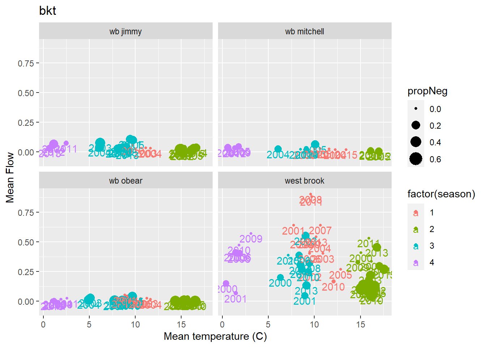
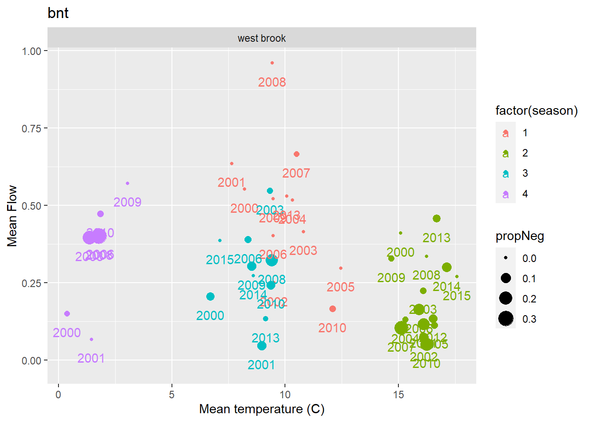
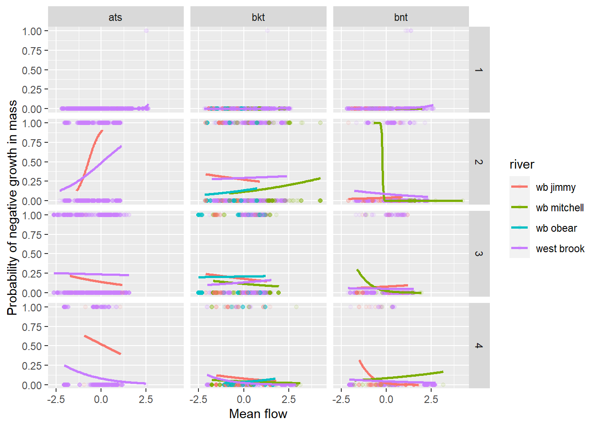
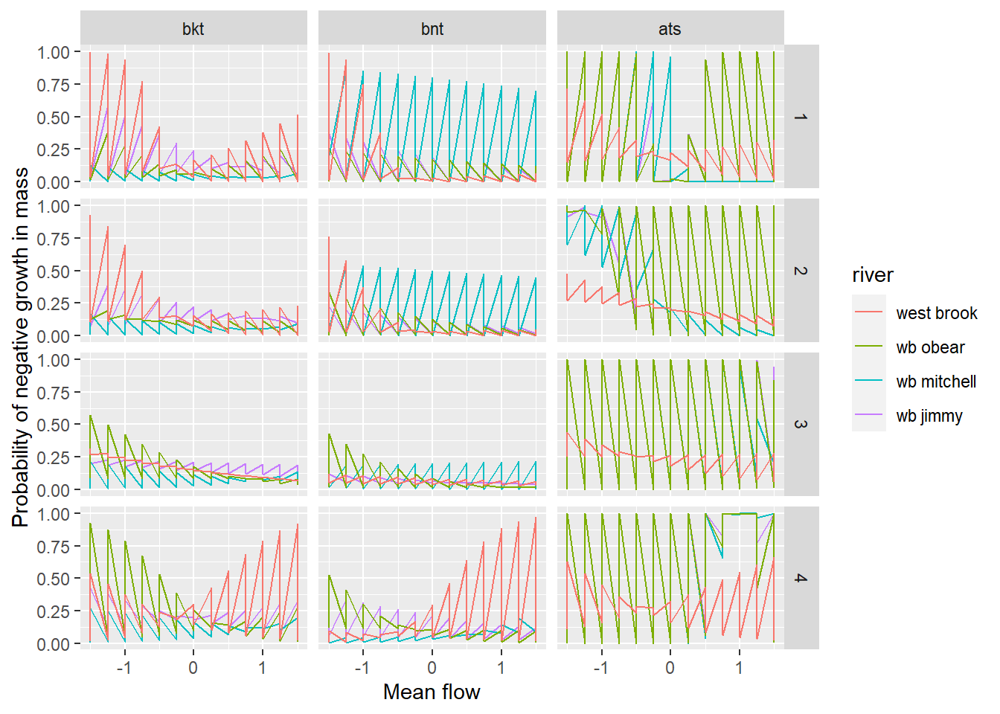
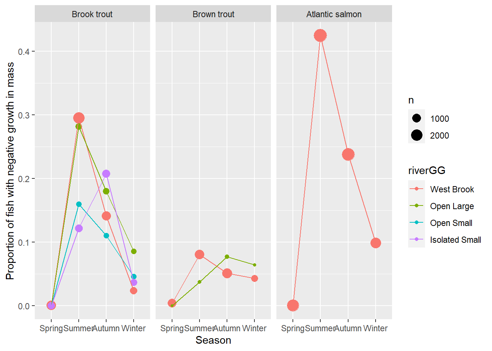
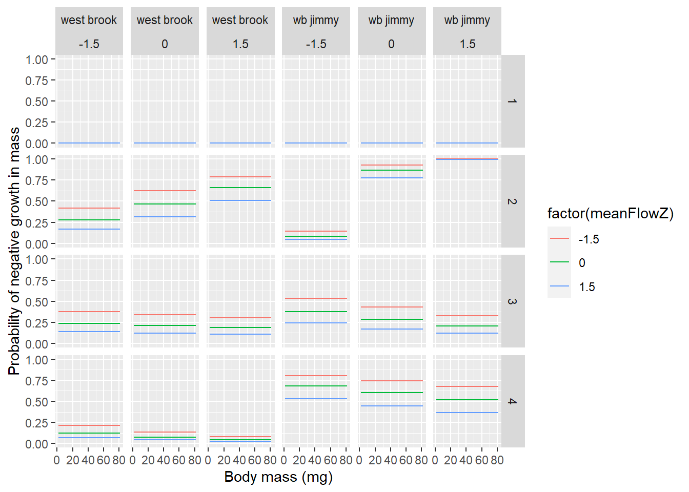

13 Growth in mass
Distribution of growth, negative growth Causes of neg growth
- Extrinsic - river, season, flow, temp - intrinsic
- Sex (fall), life history, section, size, age, previous growth (CF?), movement (section/river) consequences of neg growth - survival
- future growth (length and mass) - movement (section/river) - reprod success?
- local density (con and hetero)
Probs with growth in mass
spawning loss mass in the fall, esp in OB
Interaction between flow:temp, diff btw WB (groundwater dominated at low flow so cold) and tribs (combo of surface and gw?)
Compare growth with t/f cycle diagrams for each river
13.1 Get electrofishing data
Code
cd <- tar_read(cdWB_electro_target)13.2 Limit data to consecutive sample captures (cd1)
Previous growth models with length used all possible observations for a fish and interpolated missing observations. Here, we are just looking at consecutive captures to estimate growth over just that interval.
Code
# table(as.numeric(cd$sampleNumber), as.numeric(cd$lagSampleNumber), cd$season, cd$year) |>
# data.frame() |>
# filter(Freq > 0) |>
# arrange(Var1, Var2) |>
# rename(firstCapt = Var1, secondCapt = Var2, season = Var3, year = Var4) |>
# filter(year == 2010)
`%notin%` <- Negate(`%in%`)
cd1 <- cd |>
filter(sampleNumberDiff == 1,
tag %notin% c('1bf20ff490', '1bf20ebe4e')) |>
mutate(negGrowth = grWeight < 0)13.3 Find outlier growth rates
13.3.1 Negative outlier growth
1bf20ebe4e and 1bf20ff490 have incorrect weights leading to very negative growth rates.
Exclude these tags above. The rest of the quite negative growth fish seem plausible (remember we can’t account for stomach contents or egg loss).
Code
cd |>
arrange(grWeightS) |>
dplyr::select(tag, species, season, sampleNumber, lagSampleNumber, observedWeight, lagObservedWeight, grWeightS)# A tibble: 24,304 × 8
tag species season sampleNumber lagSampleNu…¹ obser…² lagOb…³ grWeig…⁴
<chr> <chr> <dbl> <dbl> <dbl> <dbl> <dbl> <dbl>
1 1bf20ebe4e bnt 3 55 56 46.5 4.3 -0.0320
2 257c67e414 bkt 3 59 60 7.3 4.4 -0.00414
3 1bf0fec291 bkt 3 27 28 2.7 1.6 -0.00409
4 1bf20ff490 bnt 2 54 55 167. 41.8 -0.00378
5 257c67b532 bnt 3 63 64 34 25.5 -0.00371
6 00088d1ad4 bnt 3 63 64 4.5 3.6 -0.00330
7 257c67db60 bnt 3 63 64 24.2 19.5 -0.00317
8 00088d0b59 bnt 3 63 64 3.7 3 -0.00314
9 414b684955 ats 3 15 16 5.7 4.3 -0.00289
10 0009f6ec56 bkt 3 75 76 3.5 2.7 -0.00288
# … with 24,294 more rows, and abbreviated variable names ¹lagSampleNumber,
# ²observedWeight, ³lagObservedWeight, ⁴grWeightS13.3.2 Positive outlier growth
Lots of very fast growth mostly in the spring. No clear way to exclude fish.
Code
cd1 |>
arrange(desc(grWeightS)) |>
dplyr::select(tag, species, season, sampleNumber, lagSampleNumber, observedWeight, lagObservedWeight, grWeightS) |>
print(n = 20)# A tibble: 24,299 × 8
tag species season sampleNumber lagSampleNum…¹ obser…² lagOb…³ grWei…⁴
<chr> <chr> <dbl> <dbl> <dbl> <dbl> <dbl> <dbl>
1 1bf1020623 bkt 1 29 30 1.3 14.4 0.0199
2 0009f6eef4 bkt 1 77 78 2.3 10.3 0.0160
3 413f4b1845 ats 1 13 14 1.8 8.3 0.0152
4 1bf16366cf bnt 1 33 34 2 10.7 0.0142
5 410a015165 ats 1 13 14 2.1 9.3 0.0142
6 00088d2d2c bkt 1 73 74 1.8 9.2 0.0141
7 410a0f0653 ats 1 13 14 2.2 10.9 0.0138
8 1bf18b7637 bkt 1 33 34 2.5 13.2 0.0137
9 1bf20e4e30 bnt 1 53 54 2.3 12.1 0.0137
10 1bf1930917 ats 1 37 38 1.9 11.7 0.0136
11 411a356c36 ats 1 17 18 2 7.8 0.0136
12 413d675356 ats 1 13 14 2.2 10.3 0.0134
13 41096c506c ats 1 13 14 2.5 10.4 0.0133
14 1bf18b7083 bkt 1 33 34 2.3 10.7 0.0133
15 41097c2230 ats 1 13 14 2.4 11.6 0.0132
16 1bf18b6cc8 ats 1 33 34 2.7 17 0.0132
17 410a043a56 ats 1 13 14 2.6 13.2 0.0130
18 4109740f1b ats 1 13 14 2.4 11.3 0.0130
19 1bf17f0114 bkt 1 33 34 2.3 10.5 0.0130
20 1bf18b8453 bkt 1 33 34 2.3 10.1 0.0129
# … with 24,279 more rows, and abbreviated variable names ¹lagSampleNumber,
# ²observedWeight, ³lagObservedWeight, ⁴grWeightS13.4 Raw length, weight data graphs
13.4.1 Distribution of growth rates
Code
ggplot(cd1, aes(grWeight, color = factor(species))) +
geom_freqpoly(bins = 100) +
facet_wrap(~season)
13.4.2 Length vs weight
Code
ggplot(cd1, aes(observedLength, observedWeight)) +
geom_point(alpha = 0.05) +
facet_grid(species~river, scales = 'free')
13.4.3 Weight vs weight at next sample
Code
ggplot(cd1, aes(observedWeight, lagObservedWeight, color = factor(season))) +
geom_point(alpha = 0.05) +
guides(color = guide_legend(override.aes = list(alpha = 1))) +
facet_grid(species~river, scales = 'free')
13.5 Size-adjusted growth model
13.5.1 Get l-w relationships for size-adjusted growth model
Here, we will explore size-independent growth in mass, see Sigourney, D. B., B H Letcher, M. Obedzinski, and R. A. Cunjak. “Size-Independent Growth in Fishes: Patterns, Models and Metrics.” Journal of Fish Biology 72, no. 10 (2008): 2435–55. https://doi.org/10.1111/j.1095-8649.2008.01830.x. Size-independent growth (grWeightS) is calculated in getDataElectro_targets.R file using addSizeIndGrowthWeight().
grWeightS uses the slope of log(observedWeight) ~ log(grWeight) for each river and season and species to adjust growth.
A simple linear models shows we need to get separate slopes for each river and season and species.
Code
ggplot(cd1 |> filter(grWeight > 0),
aes(log(observedWeight), log(grWeight), color = river)) +
geom_point(alpha = 0.05) +
geom_smooth(method = "lm", se = FALSE) +
facet_grid(season~species)
Code
mod0 <- lm(log(grWeight) ~ log(observedWeight), data = cd1 |> filter(grWeight > 0))
mod1 <- lm(log(grWeight) ~ log(observedWeight) * river, data = cd1 |> filter(grWeight > 0))
mod2 <- lm(log(grWeight) ~ log(observedWeight) * river * factor(season), data = cd1 |> filter(grWeight > 0))
mod3 <- lm(log(grWeight) ~ log(observedWeight) * factor(season), data = cd1 |> filter(grWeight > 0))
mod4 <- lm(log(grWeight) ~ log(observedWeight) * river * factor(season) * species, data = cd1 |> filter(grWeight > 0))
AIC(mod0,mod1,mod2,mod3,mod4) |> arrange(AIC) df AIC
mod4 73 43939.97
mod2 33 47554.54
mod3 9 48050.71
mod1 9 64666.62
mod0 3 64751.3913.6 Compare size-adjusted and instantaneous growth
Differences don’t seem big enough to warrant the extra complexity from the s-adjusted growth metric
Code
ggplot(cd1, aes(grWeight, grWeightS, color = river)) +
geom_point(alpha = 0.05) +
geom_smooth(method = "lm", se = FALSE) +
geom_abline(intercept = 0, slope = 1) +
facet_grid(season~species)
Code
ggplot(cd1 |>
dplyr::select(observedWeight, grWeight, grWeightS, season, species) |>
pivot_longer(cols = c(grWeight, grWeightS)),
aes(log(observedWeight), value, color = name)) +
geom_point(alpha = 0.05 ) +
geom_smooth(method = "lm", se = FALSE) +
scale_y_continuous("Growth rate") +
facet_grid(season~species)
13.7 Compare growth in length and mass
13.7.1 Growth rate in length vs size-independent growth rate in mass
Code
ggplot(cd1, aes(grLength, grWeightS)) +
geom_point(aes(size = observedWeight), alpha = 0.02) +
guides(size = guide_legend(override.aes = list(alpha = 1))) +
facet_grid(season~species)
13.7.2 Growth rate in length vs ‘instantaneous’ growth rate in mass
Code
ggplot(cd1, aes(grLength, grWeight)) +
geom_point(aes(size = observedWeight), alpha = 0.02) +
guides(size = guide_legend(override.aes = list(alpha = 1))) +
facet_grid(season~species)
13.8 Mean flow effect on growth?
Maybe in Jimmy for bnt, or for ats
Code
ggplot(cd1, aes(meanFlow, grWeight, color = river)) +
geom_point(alpha = 0.05) +
geom_smooth(method = "lm", se = FALSE) +
facet_grid(season~species, scales = 'free')
Fall season only
Code
ggplot(cd1 |> filter(season == 3), aes(meanFlow, grWeight, color = river)) +
geom_point(alpha = 0.1) +
geom_smooth(method = "lm", se = FALSE) +
facet_grid(season~species, scales = 'free')
13.9 Mean temperature effect on growth?
Maybe in Jimmy for bnt, or for ats
Code
ggplot(cd1, aes(meanTemperature, grWeight, color = river)) +
geom_point(alpha = 0.05) +
geom_smooth(method = "lm", se = FALSE) +
facet_grid(season~species, scales = 'free')
Code
ggplot(cd1 |> filter(species == 'bkt'), aes(meanTemperature, grWeight, color = river)) +
geom_point(alpha = 0.1) +
geom_smooth(method = "lm", se = FALSE) +
ggtitle('Species = brook trout') +
facet_wrap(~season, scales = 'free')
Code
ggplot(cd1 |> filter(species == 'bnt'), aes(meanTemperature, grWeight, color = river)) +
geom_point(alpha = 0.1) +
geom_smooth(method = "lm", se = FALSE) +
ggtitle('Species = brown trout') +
facet_wrap(~season, scales = 'free')
Code
ggplot(cd1 |> filter(species == 'ats'), aes(meanTemperature, grWeight, color = river)) +
geom_point(alpha = 0.1) +
geom_smooth(method = "lm", se = FALSE) +
ggtitle('Species = Atlantic salmon') +
facet_wrap(~season, scales = 'free')
13.10 Proportion of fish with negative growth by species/river/season
Code
ggplot(cd1, aes(negGrowth)) +
geom_bar() +
facet_grid(season~species+river, scales = "free")
Code
propNegSRS <- cd1 |>
group_by(species, river, season) |>
summarize(numNeg = sum(negGrowth, na.rm = TRUE),
n = n()
) |>
mutate(numPos = n - numNeg,
propPos = numPos/n,
propNeg = numNeg/n)
ggplot(propNegSRS |> filter(n > 10), aes(season, propNeg, color = river)) +
geom_point(aes(size = n)) +
geom_line() +
scale_y_continuous("Proportion of fish with negative growth in mass") +
facet_wrap(~species)
13.11 Proportion of fish with negative growth by species/river/sampleNumber
Break down season by year
Code
propNegSRsN <- cd1 |>
group_by(species, river, sampleNumber, season, year) |>
summarize(numNeg = sum(negGrowth, na.rm = TRUE),
n = n(),
mT = mean(meanTemperature, na.rm = TRUE),
mF = mean(meanFlow, na.rm = TRUE)
) |>
mutate(numPos = n - numNeg,
propPos = numPos/n,
propNeg = numNeg/n)
ggplot(propNegSRsN |> filter(n > 10), aes(year, propNeg, color = river)) +
geom_point(aes(size = n)) +
geom_line() +
scale_y_continuous("Proportion of fish with negative growth in mass") +
facet_grid(season~species)
13.12 Environmental effects on proportion of fish with negative growth
13.12.1 Proportion of fish with negative growth by flow
Code
ggplot(propNegSRsN |> filter(n > 10), aes(mF, propNeg, color = river)) +
geom_point(aes(size = n)) +
geom_smooth(method = "lm", se = FALSE) +
scale_y_continuous("Proportion of fish with negative growth in mass") +
scale_x_continuous("Mean Flow") +
facet_grid(season~species)
13.12.2 Proportion of fish with negative growth by temperature
Code
ggplot(propNegSRsN |> filter(n > 10), aes(mT, propNeg, color = river)) +
geom_point(aes(size = n)) +
geom_smooth(method = "lm", se = FALSE) +
scale_y_continuous("Proportion of fish with negative growth in mass") +
scale_x_continuous("Mean Temperature") +
facet_grid(season~species, scales = "free")
Rotate graph so we can have free scales for each season
Code
ggplot(propNegSRsN |> filter(n > 10), aes(mT, propNeg, color = river)) +
geom_point(aes(size = n)) +
geom_smooth(method = "lm", se = FALSE) +
scale_y_continuous("Proportion of fish with negative growth in mass") +
scale_x_continuous("Mean Temperature") +
facet_grid(species~season, scales = "free")
13.13 Models for environmental effects on propNeg
13.13.1 Standardize flow and temperature
Code
# getZ <- function(d){
# list(
# mean = mean(d, na.rm = TRUE),
# sd = sd(d, na.rm = TRUE)
# )
# }
# fZ <- getZ(cd1$meanFlow)
# fT <- getZ(cd1$meanTemperature)
z <- cd1 |>
group_by(season) |>
summarize(fZMean = mean(meanFlow, na.rm = TRUE),
fZSd = sd(meanFlow, na.rm = TRUE),
fTMean = mean(meanTemperature, na.rm = TRUE),
fTSd = sd(meanTemperature, na.rm = TRUE)
)
cd1 <- cd1 |>
left_join(z) |>
mutate(meanFlowZ = (meanFlow - fZMean)/fZSd,
meanTempZ = (meanTemperature - fTMean)/fTSd)13.13.2 Raw data with logistic fit for flow effect
Code
ggplot(cd1 |> filter(!is.na(negGrowth)), aes(meanFlowZ, negGrowth * 1, color = river)) +
geom_point(alpha = 0.1) +
geom_smooth(method = "glm",
method.args = list(family = "binomial"),
se = FALSE) +
labs(y = "Probability of negative growth in mass", x = "Mean flow") +
facet_grid(season~species)
Code
ggplot(cd1 |> filter(!is.na(negGrowth)), aes(meanFlowZ, negGrowth * 1, color = river)) +
geom_point(alpha = 0.1) +
geom_smooth(method = "glm",
method.args = list(family = "binomial"),
se = FALSE) +
labs(y = "Probability of negative growth in mass", x = "Mean flow") +
facet_grid(season~species+river)
13.13.3 Raw data with logistic fit for temperature effect
Code
ggplot(cd1 |> filter(!is.na(negGrowth), meanTempZ > -4), aes(meanTempZ, negGrowth * 1, color = river)) +
geom_point(alpha = 0.1) +
geom_smooth(method = "glm",
method.args = list(family = "binomial"),
se = FALSE) +
labs(y = "Probability of negative growth in mass", x = "Mean temperature") +
facet_grid(season~species)
13.14 Logistic model for flow and temperature, all species
13.14.1 Model selection
Code
modSpecies <- c("bkt", "ats", "bnt")
cd1Mod <- cd1 |> filter(species == modSpecies)
modFT0 <- glm(negGrowth ~ meanFlowZ * meanTempZ * river * species, family = "binomial", data = cd1Mod)
modFT1 <- glm(negGrowth ~ meanFlowZ * meanTempZ * river + species, family = "binomial", data = cd1Mod)
modFT2 <- glm(negGrowth ~ meanFlowZ * meanTempZ + river + species, family = "binomial", data = cd1Mod)
modFT3 <- glm(negGrowth ~ meanFlowZ + meanTempZ + river + species, family = "binomial", data = cd1Mod)
modFT4 <- glm(negGrowth ~ meanFlowZ * meanTempZ + river , family = "binomial", data = cd1Mod)
modFT5 <- glm(negGrowth ~ meanFlowZ * meanTempZ + river , family = "binomial", data = cd1Mod)
modFT6 <- glm(negGrowth ~ meanFlowZ * meanTempZ + species , family = "binomial", data = cd1Mod)
modFT7 <- glm(negGrowth ~ meanFlowZ * meanTempZ, family = "binomial", data = cd1Mod)
modFT8 <- glm(negGrowth ~ meanFlowZ * meanTempZ * river * factor(season) + species, family = "binomial", data = cd1Mod)
modFT9 <- glm(negGrowth ~ meanFlowZ * meanTempZ * river * factor(season) * species, family = "binomial", data = cd1Mod)
modFT10 <- glm(negGrowth ~ meanFlowZ + meanTempZ * river * factor(season) * species, family = "binomial", data = cd1Mod)
modFT11 <- glm(negGrowth ~ meanFlowZ * meanTempZ * river * factor(season) * observedWeight + species, family = "binomial", data = cd1Mod)
modFT12 <- glm(negGrowth ~ meanFlowZ * meanTempZ * river * factor(season) * species * observedWeight, family = "binomial", data = cd1Mod)
AIC(modFT0, modFT1,modFT2, modFT3,modFT4,modFT5, modFT6,modFT7,modFT8,modFT9,modFT10, modFT11, modFT12) |> arrange(AIC) df AIC
modFT11 130 4828.164
modFT8 66 5231.416
modFT1 18 6391.283
modFT0 36 6397.411
modFT2 9 6397.992
modFT6 6 6403.777
modFT3 8 6405.421
modFT4 7 6620.511
modFT5 7 6620.511
modFT7 4 6629.994
modFT12 261 90126.522
modFT9 136 100401.269
modFT10 71 113535.33413.14.2 Model results for additive model (not very good)
Code
# https://www.statology.org/logistic-regression-in-r/
summary(modFT3)
Call:
glm(formula = negGrowth ~ meanFlowZ + meanTempZ + river + species,
family = "binomial", data = cd1Mod)
Deviance Residuals:
Min 1Q Median 3Q Max
-0.9925 -0.6258 -0.4903 -0.3177 2.7923
Coefficients:
Estimate Std. Error z value Pr(>|z|)
(Intercept) -1.17789 0.14205 -8.292 < 2e-16 ***
meanFlowZ -0.44495 0.03759 -11.836 < 2e-16 ***
meanTempZ -0.08742 0.03546 -2.465 0.01369 *
riverwb mitchell -0.66183 0.21765 -3.041 0.00236 **
riverwb obear -0.37670 0.15907 -2.368 0.01788 *
riverwest brook -0.22106 0.13450 -1.644 0.10026
speciesbkt -0.44210 0.08472 -5.218 1.81e-07 ***
speciesbnt -1.62167 0.12599 -12.871 < 2e-16 ***
---
Signif. codes: 0 '***' 0.001 '**' 0.01 '*' 0.05 '.' 0.1 ' ' 1
(Dispersion parameter for binomial family taken to be 1)
Null deviance: 6812.8 on 8098 degrees of freedom
Residual deviance: 6389.4 on 8091 degrees of freedom
(32 observations deleted due to missingness)
AIC: 6405.4
Number of Fisher Scoring iterations: 5Code
anova(modFT3)Analysis of Deviance Table
Model: binomial, link: logit
Response: negGrowth
Terms added sequentially (first to last)
Df Deviance Resid. Df Resid. Dev
NULL 8098 6812.8
meanFlowZ 1 153.310 8097 6659.5
meanTempZ 1 30.044 8096 6629.4
river 3 15.452 8093 6614.0
species 2 224.549 8091 6389.4Code
pscl::pR2(modFT3)["McFadden"]fitting null model for pseudo-r2 McFadden
0.06214128 Code
caret::varImp(modFT3) |> arrange(desc(Overall)) Overall
speciesbnt 12.871111
meanFlowZ 11.836474
speciesbkt 5.218343
riverwb mitchell 3.040767
meanTempZ 2.465196
riverwb obear 2.368152
riverwest brook 1.64361413.14.3 Model results for full interactive model (best model)
Code
# https://www.statology.org/logistic-regression-in-r/
summary(modFT11)
Call:
glm(formula = negGrowth ~ meanFlowZ * meanTempZ * river * factor(season) *
observedWeight + species, family = "binomial", data = cd1Mod)
Deviance Residuals:
Min 1Q Median 3Q Max
-2.6050 -0.5270 -0.1721 0.0000 3.6751
Coefficients:
Estimate
(Intercept) -2.349e+01
meanFlowZ -2.030e-02
meanTempZ -1.039e-01
riverwb mitchell 3.518e-02
riverwb obear -7.123e-02
riverwest brook -1.794e+02
factor(season)2 2.273e+01
factor(season)3 2.226e+01
factor(season)4 2.205e+01
observedWeight 6.768e-03
speciesbkt -1.001e+00
speciesbnt -3.288e+00
meanFlowZ:meanTempZ 2.405e-02
meanFlowZ:riverwb mitchell 1.719e-01
meanFlowZ:riverwb obear 2.029e-02
meanFlowZ:riverwest brook -4.876e+01
meanTempZ:riverwb mitchell -7.618e-02
meanTempZ:riverwb obear 1.039e-01
meanTempZ:riverwest brook -3.102e+01
meanFlowZ:factor(season)2 -6.720e-03
meanFlowZ:factor(season)3 3.032e-02
meanFlowZ:factor(season)4 4.804e-01
meanTempZ:factor(season)2 -1.354e-01
meanTempZ:factor(season)3 3.435e-01
meanTempZ:factor(season)4 -3.590e-01
riverwb mitchell:factor(season)2 -9.762e-01
riverwb obear:factor(season)2 -1.477e+00
riverwest brook:factor(season)2 1.792e+02
riverwb mitchell:factor(season)3 -2.336e+00
riverwb obear:factor(season)3 -5.790e-01
riverwest brook:factor(season)3 1.789e+02
riverwb mitchell:factor(season)4 -4.812e+00
riverwb obear:factor(season)4 -4.385e-01
riverwest brook:factor(season)4 1.780e+02
meanFlowZ:observedWeight -5.846e-03
meanTempZ:observedWeight -1.086e-02
riverwb mitchell:observedWeight -1.390e-02
riverwb obear:observedWeight -6.768e-03
riverwest brook:observedWeight -7.367e+00
factor(season)2:observedWeight 3.612e-02
factor(season)3:observedWeight 4.931e-02
factor(season)4:observedWeight 3.586e-03
meanFlowZ:meanTempZ:riverwb mitchell -2.951e-01
meanFlowZ:meanTempZ:riverwb obear -2.406e-02
meanFlowZ:meanTempZ:riverwest brook -4.881e+01
meanFlowZ:meanTempZ:factor(season)2 7.790e-01
meanFlowZ:meanTempZ:factor(season)3 -2.353e-01
meanFlowZ:meanTempZ:factor(season)4 4.777e-01
meanFlowZ:riverwb mitchell:factor(season)2 1.221e+00
meanFlowZ:riverwb obear:factor(season)2 -2.829e+00
meanFlowZ:riverwest brook:factor(season)2 4.789e+01
meanFlowZ:riverwb mitchell:factor(season)3 5.697e-01
meanFlowZ:riverwb obear:factor(season)3 -5.858e-01
meanFlowZ:riverwest brook:factor(season)3 4.831e+01
meanFlowZ:riverwb mitchell:factor(season)4 1.035e+00
meanFlowZ:riverwb obear:factor(season)4 -1.791e+00
meanFlowZ:riverwest brook:factor(season)4 4.859e+01
meanTempZ:riverwb mitchell:factor(season)2 -1.779e+00
meanTempZ:riverwb obear:factor(season)2 -7.206e-01
meanTempZ:riverwest brook:factor(season)2 3.152e+01
meanTempZ:riverwb mitchell:factor(season)3 9.529e-02
meanTempZ:riverwb obear:factor(season)3 -2.915e-01
meanTempZ:riverwest brook:factor(season)3 3.048e+01
meanTempZ:riverwb mitchell:factor(season)4 -1.594e+00
meanTempZ:riverwb obear:factor(season)4 1.945e+00
meanTempZ:riverwest brook:factor(season)4 2.870e+01
meanFlowZ:meanTempZ:observedWeight -2.031e-03
meanFlowZ:riverwb mitchell:observedWeight -9.430e-03
meanFlowZ:riverwb obear:observedWeight 5.845e-03
meanFlowZ:riverwest brook:observedWeight -1.947e+00
meanTempZ:riverwb mitchell:observedWeight 2.695e-02
meanTempZ:riverwb obear:observedWeight 1.086e-02
meanTempZ:riverwest brook:observedWeight -1.750e+00
meanFlowZ:factor(season)2:observedWeight -5.857e-02
meanFlowZ:factor(season)3:observedWeight 7.307e-03
meanFlowZ:factor(season)4:observedWeight -5.947e-02
meanTempZ:factor(season)2:observedWeight 2.356e-02
meanTempZ:factor(season)3:observedWeight 1.156e-02
meanTempZ:factor(season)4:observedWeight 2.618e-02
riverwb mitchell:factor(season)2:observedWeight -1.378e-02
riverwb obear:factor(season)2:observedWeight 1.794e-02
riverwest brook:factor(season)2:observedWeight 7.358e+00
riverwb mitchell:factor(season)3:observedWeight 1.052e-01
riverwb obear:factor(season)3:observedWeight 9.577e-02
riverwest brook:factor(season)3:observedWeight 7.356e+00
riverwb mitchell:factor(season)4:observedWeight 2.697e-01
riverwb obear:factor(season)4:observedWeight 2.408e-02
riverwest brook:factor(season)4:observedWeight 7.426e+00
meanFlowZ:meanTempZ:riverwb mitchell:factor(season)2 -5.715e+00
meanFlowZ:meanTempZ:riverwb obear:factor(season)2 -2.565e+00
meanFlowZ:meanTempZ:riverwest brook:factor(season)2 4.785e+01
meanFlowZ:meanTempZ:riverwb mitchell:factor(season)3 9.990e-01
meanFlowZ:meanTempZ:riverwb obear:factor(season)3 3.806e-01
meanFlowZ:meanTempZ:riverwest brook:factor(season)3 4.898e+01
meanFlowZ:meanTempZ:riverwb mitchell:factor(season)4 3.782e+00
meanFlowZ:meanTempZ:riverwb obear:factor(season)4 -3.618e+00
meanFlowZ:meanTempZ:riverwest brook:factor(season)4 4.657e+01
meanFlowZ:meanTempZ:riverwb mitchell:observedWeight 2.553e-02
meanFlowZ:meanTempZ:riverwb obear:observedWeight 2.030e-03
meanFlowZ:meanTempZ:riverwest brook:observedWeight -2.047e+00
meanFlowZ:meanTempZ:factor(season)2:observedWeight -5.723e-02
meanFlowZ:meanTempZ:factor(season)3:observedWeight -9.854e-04
meanFlowZ:meanTempZ:factor(season)4:observedWeight 2.457e-02
meanFlowZ:riverwb mitchell:factor(season)2:observedWeight -1.617e-01
meanFlowZ:riverwb obear:factor(season)2:observedWeight 1.144e-01
meanFlowZ:riverwest brook:factor(season)2:observedWeight 2.012e+00
meanFlowZ:riverwb mitchell:factor(season)3:observedWeight -2.718e-02
meanFlowZ:riverwb obear:factor(season)3:observedWeight -1.042e-02
meanFlowZ:riverwest brook:factor(season)3:observedWeight 1.952e+00
meanFlowZ:riverwb mitchell:factor(season)4:observedWeight -6.900e-02
meanFlowZ:riverwb obear:factor(season)4:observedWeight 2.719e-02
meanFlowZ:riverwest brook:factor(season)4:observedWeight 1.995e+00
meanTempZ:riverwb mitchell:factor(season)2:observedWeight 2.426e-02
meanTempZ:riverwb obear:factor(season)2:observedWeight 8.041e-03
meanTempZ:riverwest brook:factor(season)2:observedWeight 1.731e+00
meanTempZ:riverwb mitchell:factor(season)3:observedWeight -1.065e-02
meanTempZ:riverwb obear:factor(season)3:observedWeight 1.954e-02
meanTempZ:riverwest brook:factor(season)3:observedWeight 1.765e+00
meanTempZ:riverwb mitchell:factor(season)4:observedWeight -7.073e-03
meanTempZ:riverwb obear:factor(season)4:observedWeight -1.388e-01
meanTempZ:riverwest brook:factor(season)4:observedWeight 1.754e+00
meanFlowZ:meanTempZ:riverwb mitchell:factor(season)2:observedWeight 2.550e-01
meanFlowZ:meanTempZ:riverwb obear:factor(season)2:observedWeight 1.810e-01
meanFlowZ:meanTempZ:riverwest brook:factor(season)2:observedWeight 2.112e+00
meanFlowZ:meanTempZ:riverwb mitchell:factor(season)3:observedWeight -1.169e-01
meanFlowZ:meanTempZ:riverwb obear:factor(season)3:observedWeight -3.278e-02
meanFlowZ:meanTempZ:riverwest brook:factor(season)3:observedWeight 2.065e+00
meanFlowZ:meanTempZ:riverwb mitchell:factor(season)4:observedWeight -2.881e-01
meanFlowZ:meanTempZ:riverwb obear:factor(season)4:observedWeight 3.252e-01
meanFlowZ:meanTempZ:riverwest brook:factor(season)4:observedWeight 2.025e+00
Std. Error
(Intercept) 2.564e+04
meanFlowZ 3.031e+04
meanTempZ 2.863e+04
riverwb mitchell 3.796e+04
riverwb obear 3.917e+04
riverwest brook 2.867e+04
factor(season)2 2.564e+04
factor(season)3 2.564e+04
factor(season)4 2.564e+04
observedWeight 1.738e+03
speciesbkt 1.046e-01
speciesbnt 1.907e-01
meanFlowZ:meanTempZ 1.983e+04
meanFlowZ:riverwb mitchell 4.198e+04
meanFlowZ:riverwb obear 5.417e+04
meanFlowZ:riverwest brook 3.058e+04
meanTempZ:riverwb mitchell 4.329e+04
meanTempZ:riverwb obear 4.311e+04
meanTempZ:riverwest brook 2.886e+04
meanFlowZ:factor(season)2 3.031e+04
meanFlowZ:factor(season)3 3.031e+04
meanFlowZ:factor(season)4 3.031e+04
meanTempZ:factor(season)2 2.863e+04
meanTempZ:factor(season)3 2.863e+04
meanTempZ:factor(season)4 2.863e+04
riverwb mitchell:factor(season)2 3.796e+04
riverwb obear:factor(season)2 3.917e+04
riverwest brook:factor(season)2 2.867e+04
riverwb mitchell:factor(season)3 3.796e+04
riverwb obear:factor(season)3 3.917e+04
riverwest brook:factor(season)3 2.867e+04
riverwb mitchell:factor(season)4 3.796e+04
riverwb obear:factor(season)4 3.917e+04
riverwest brook:factor(season)4 2.867e+04
meanFlowZ:observedWeight 1.528e+03
meanTempZ:observedWeight 1.796e+03
riverwb mitchell:observedWeight 2.668e+03
riverwb obear:observedWeight 2.753e+03
riverwest brook:observedWeight 1.961e+03
factor(season)2:observedWeight 1.738e+03
factor(season)3:observedWeight 1.738e+03
factor(season)4:observedWeight 1.738e+03
meanFlowZ:meanTempZ:riverwb mitchell 3.780e+04
meanFlowZ:meanTempZ:riverwb obear 3.412e+04
meanFlowZ:meanTempZ:riverwest brook 2.011e+04
meanFlowZ:meanTempZ:factor(season)2 1.983e+04
meanFlowZ:meanTempZ:factor(season)3 1.983e+04
meanFlowZ:meanTempZ:factor(season)4 1.983e+04
meanFlowZ:riverwb mitchell:factor(season)2 4.198e+04
meanFlowZ:riverwb obear:factor(season)2 5.417e+04
meanFlowZ:riverwest brook:factor(season)2 3.058e+04
meanFlowZ:riverwb mitchell:factor(season)3 4.198e+04
meanFlowZ:riverwb obear:factor(season)3 5.417e+04
meanFlowZ:riverwest brook:factor(season)3 3.058e+04
meanFlowZ:riverwb mitchell:factor(season)4 4.198e+04
meanFlowZ:riverwb obear:factor(season)4 5.417e+04
meanFlowZ:riverwest brook:factor(season)4 3.058e+04
meanTempZ:riverwb mitchell:factor(season)2 4.329e+04
meanTempZ:riverwb obear:factor(season)2 4.311e+04
meanTempZ:riverwest brook:factor(season)2 2.886e+04
meanTempZ:riverwb mitchell:factor(season)3 4.329e+04
meanTempZ:riverwb obear:factor(season)3 4.311e+04
meanTempZ:riverwest brook:factor(season)3 2.886e+04
meanTempZ:riverwb mitchell:factor(season)4 4.329e+04
meanTempZ:riverwb obear:factor(season)4 4.311e+04
meanTempZ:riverwest brook:factor(season)4 2.886e+04
meanFlowZ:meanTempZ:observedWeight 1.196e+03
meanFlowZ:riverwb mitchell:observedWeight 3.284e+03
meanFlowZ:riverwb obear:observedWeight 3.552e+03
meanFlowZ:riverwest brook:observedWeight 1.550e+03
meanTempZ:riverwb mitchell:observedWeight 3.487e+03
meanTempZ:riverwb obear:observedWeight 3.191e+03
meanTempZ:riverwest brook:observedWeight 1.811e+03
meanFlowZ:factor(season)2:observedWeight 1.528e+03
meanFlowZ:factor(season)3:observedWeight 1.528e+03
meanFlowZ:factor(season)4:observedWeight 1.528e+03
meanTempZ:factor(season)2:observedWeight 1.796e+03
meanTempZ:factor(season)3:observedWeight 1.796e+03
meanTempZ:factor(season)4:observedWeight 1.796e+03
riverwb mitchell:factor(season)2:observedWeight 2.668e+03
riverwb obear:factor(season)2:observedWeight 2.753e+03
riverwest brook:factor(season)2:observedWeight 1.961e+03
riverwb mitchell:factor(season)3:observedWeight 2.668e+03
riverwb obear:factor(season)3:observedWeight 2.753e+03
riverwest brook:factor(season)3:observedWeight 1.961e+03
riverwb mitchell:factor(season)4:observedWeight 2.668e+03
riverwb obear:factor(season)4:observedWeight 2.753e+03
riverwest brook:factor(season)4:observedWeight 1.961e+03
meanFlowZ:meanTempZ:riverwb mitchell:factor(season)2 3.780e+04
meanFlowZ:meanTempZ:riverwb obear:factor(season)2 3.412e+04
meanFlowZ:meanTempZ:riverwest brook:factor(season)2 2.011e+04
meanFlowZ:meanTempZ:riverwb mitchell:factor(season)3 3.780e+04
meanFlowZ:meanTempZ:riverwb obear:factor(season)3 3.412e+04
meanFlowZ:meanTempZ:riverwest brook:factor(season)3 2.011e+04
meanFlowZ:meanTempZ:riverwb mitchell:factor(season)4 3.780e+04
meanFlowZ:meanTempZ:riverwb obear:factor(season)4 3.412e+04
meanFlowZ:meanTempZ:riverwest brook:factor(season)4 2.011e+04
meanFlowZ:meanTempZ:riverwb mitchell:observedWeight 3.567e+03
meanFlowZ:meanTempZ:riverwb obear:observedWeight 2.423e+03
meanFlowZ:meanTempZ:riverwest brook:observedWeight 1.220e+03
meanFlowZ:meanTempZ:factor(season)2:observedWeight 1.196e+03
meanFlowZ:meanTempZ:factor(season)3:observedWeight 1.196e+03
meanFlowZ:meanTempZ:factor(season)4:observedWeight 1.196e+03
meanFlowZ:riverwb mitchell:factor(season)2:observedWeight 3.284e+03
meanFlowZ:riverwb obear:factor(season)2:observedWeight 3.552e+03
meanFlowZ:riverwest brook:factor(season)2:observedWeight 1.550e+03
meanFlowZ:riverwb mitchell:factor(season)3:observedWeight 3.284e+03
meanFlowZ:riverwb obear:factor(season)3:observedWeight 3.552e+03
meanFlowZ:riverwest brook:factor(season)3:observedWeight 1.550e+03
meanFlowZ:riverwb mitchell:factor(season)4:observedWeight 3.284e+03
meanFlowZ:riverwb obear:factor(season)4:observedWeight 3.552e+03
meanFlowZ:riverwest brook:factor(season)4:observedWeight 1.550e+03
meanTempZ:riverwb mitchell:factor(season)2:observedWeight 3.487e+03
meanTempZ:riverwb obear:factor(season)2:observedWeight 3.191e+03
meanTempZ:riverwest brook:factor(season)2:observedWeight 1.811e+03
meanTempZ:riverwb mitchell:factor(season)3:observedWeight 3.487e+03
meanTempZ:riverwb obear:factor(season)3:observedWeight 3.191e+03
meanTempZ:riverwest brook:factor(season)3:observedWeight 1.811e+03
meanTempZ:riverwb mitchell:factor(season)4:observedWeight 3.487e+03
meanTempZ:riverwb obear:factor(season)4:observedWeight 3.191e+03
meanTempZ:riverwest brook:factor(season)4:observedWeight 1.811e+03
meanFlowZ:meanTempZ:riverwb mitchell:factor(season)2:observedWeight 3.567e+03
meanFlowZ:meanTempZ:riverwb obear:factor(season)2:observedWeight 2.423e+03
meanFlowZ:meanTempZ:riverwest brook:factor(season)2:observedWeight 1.220e+03
meanFlowZ:meanTempZ:riverwb mitchell:factor(season)3:observedWeight 3.567e+03
meanFlowZ:meanTempZ:riverwb obear:factor(season)3:observedWeight 2.423e+03
meanFlowZ:meanTempZ:riverwest brook:factor(season)3:observedWeight 1.220e+03
meanFlowZ:meanTempZ:riverwb mitchell:factor(season)4:observedWeight 3.567e+03
meanFlowZ:meanTempZ:riverwb obear:factor(season)4:observedWeight 2.423e+03
meanFlowZ:meanTempZ:riverwest brook:factor(season)4:observedWeight 1.220e+03
z value
(Intercept) -0.001
meanFlowZ 0.000
meanTempZ 0.000
riverwb mitchell 0.000
riverwb obear 0.000
riverwest brook -0.006
factor(season)2 0.001
factor(season)3 0.001
factor(season)4 0.001
observedWeight 0.000
speciesbkt -9.578
speciesbnt -17.242
meanFlowZ:meanTempZ 0.000
meanFlowZ:riverwb mitchell 0.000
meanFlowZ:riverwb obear 0.000
meanFlowZ:riverwest brook -0.002
meanTempZ:riverwb mitchell 0.000
meanTempZ:riverwb obear 0.000
meanTempZ:riverwest brook -0.001
meanFlowZ:factor(season)2 0.000
meanFlowZ:factor(season)3 0.000
meanFlowZ:factor(season)4 0.000
meanTempZ:factor(season)2 0.000
meanTempZ:factor(season)3 0.000
meanTempZ:factor(season)4 0.000
riverwb mitchell:factor(season)2 0.000
riverwb obear:factor(season)2 0.000
riverwest brook:factor(season)2 0.006
riverwb mitchell:factor(season)3 0.000
riverwb obear:factor(season)3 0.000
riverwest brook:factor(season)3 0.006
riverwb mitchell:factor(season)4 0.000
riverwb obear:factor(season)4 0.000
riverwest brook:factor(season)4 0.006
meanFlowZ:observedWeight 0.000
meanTempZ:observedWeight 0.000
riverwb mitchell:observedWeight 0.000
riverwb obear:observedWeight 0.000
riverwest brook:observedWeight -0.004
factor(season)2:observedWeight 0.000
factor(season)3:observedWeight 0.000
factor(season)4:observedWeight 0.000
meanFlowZ:meanTempZ:riverwb mitchell 0.000
meanFlowZ:meanTempZ:riverwb obear 0.000
meanFlowZ:meanTempZ:riverwest brook -0.002
meanFlowZ:meanTempZ:factor(season)2 0.000
meanFlowZ:meanTempZ:factor(season)3 0.000
meanFlowZ:meanTempZ:factor(season)4 0.000
meanFlowZ:riverwb mitchell:factor(season)2 0.000
meanFlowZ:riverwb obear:factor(season)2 0.000
meanFlowZ:riverwest brook:factor(season)2 0.002
meanFlowZ:riverwb mitchell:factor(season)3 0.000
meanFlowZ:riverwb obear:factor(season)3 0.000
meanFlowZ:riverwest brook:factor(season)3 0.002
meanFlowZ:riverwb mitchell:factor(season)4 0.000
meanFlowZ:riverwb obear:factor(season)4 0.000
meanFlowZ:riverwest brook:factor(season)4 0.002
meanTempZ:riverwb mitchell:factor(season)2 0.000
meanTempZ:riverwb obear:factor(season)2 0.000
meanTempZ:riverwest brook:factor(season)2 0.001
meanTempZ:riverwb mitchell:factor(season)3 0.000
meanTempZ:riverwb obear:factor(season)3 0.000
meanTempZ:riverwest brook:factor(season)3 0.001
meanTempZ:riverwb mitchell:factor(season)4 0.000
meanTempZ:riverwb obear:factor(season)4 0.000
meanTempZ:riverwest brook:factor(season)4 0.001
meanFlowZ:meanTempZ:observedWeight 0.000
meanFlowZ:riverwb mitchell:observedWeight 0.000
meanFlowZ:riverwb obear:observedWeight 0.000
meanFlowZ:riverwest brook:observedWeight -0.001
meanTempZ:riverwb mitchell:observedWeight 0.000
meanTempZ:riverwb obear:observedWeight 0.000
meanTempZ:riverwest brook:observedWeight -0.001
meanFlowZ:factor(season)2:observedWeight 0.000
meanFlowZ:factor(season)3:observedWeight 0.000
meanFlowZ:factor(season)4:observedWeight 0.000
meanTempZ:factor(season)2:observedWeight 0.000
meanTempZ:factor(season)3:observedWeight 0.000
meanTempZ:factor(season)4:observedWeight 0.000
riverwb mitchell:factor(season)2:observedWeight 0.000
riverwb obear:factor(season)2:observedWeight 0.000
riverwest brook:factor(season)2:observedWeight 0.004
riverwb mitchell:factor(season)3:observedWeight 0.000
riverwb obear:factor(season)3:observedWeight 0.000
riverwest brook:factor(season)3:observedWeight 0.004
riverwb mitchell:factor(season)4:observedWeight 0.000
riverwb obear:factor(season)4:observedWeight 0.000
riverwest brook:factor(season)4:observedWeight 0.004
meanFlowZ:meanTempZ:riverwb mitchell:factor(season)2 0.000
meanFlowZ:meanTempZ:riverwb obear:factor(season)2 0.000
meanFlowZ:meanTempZ:riverwest brook:factor(season)2 0.002
meanFlowZ:meanTempZ:riverwb mitchell:factor(season)3 0.000
meanFlowZ:meanTempZ:riverwb obear:factor(season)3 0.000
meanFlowZ:meanTempZ:riverwest brook:factor(season)3 0.002
meanFlowZ:meanTempZ:riverwb mitchell:factor(season)4 0.000
meanFlowZ:meanTempZ:riverwb obear:factor(season)4 0.000
meanFlowZ:meanTempZ:riverwest brook:factor(season)4 0.002
meanFlowZ:meanTempZ:riverwb mitchell:observedWeight 0.000
meanFlowZ:meanTempZ:riverwb obear:observedWeight 0.000
meanFlowZ:meanTempZ:riverwest brook:observedWeight -0.002
meanFlowZ:meanTempZ:factor(season)2:observedWeight 0.000
meanFlowZ:meanTempZ:factor(season)3:observedWeight 0.000
meanFlowZ:meanTempZ:factor(season)4:observedWeight 0.000
meanFlowZ:riverwb mitchell:factor(season)2:observedWeight 0.000
meanFlowZ:riverwb obear:factor(season)2:observedWeight 0.000
meanFlowZ:riverwest brook:factor(season)2:observedWeight 0.001
meanFlowZ:riverwb mitchell:factor(season)3:observedWeight 0.000
meanFlowZ:riverwb obear:factor(season)3:observedWeight 0.000
meanFlowZ:riverwest brook:factor(season)3:observedWeight 0.001
meanFlowZ:riverwb mitchell:factor(season)4:observedWeight 0.000
meanFlowZ:riverwb obear:factor(season)4:observedWeight 0.000
meanFlowZ:riverwest brook:factor(season)4:observedWeight 0.001
meanTempZ:riverwb mitchell:factor(season)2:observedWeight 0.000
meanTempZ:riverwb obear:factor(season)2:observedWeight 0.000
meanTempZ:riverwest brook:factor(season)2:observedWeight 0.001
meanTempZ:riverwb mitchell:factor(season)3:observedWeight 0.000
meanTempZ:riverwb obear:factor(season)3:observedWeight 0.000
meanTempZ:riverwest brook:factor(season)3:observedWeight 0.001
meanTempZ:riverwb mitchell:factor(season)4:observedWeight 0.000
meanTempZ:riverwb obear:factor(season)4:observedWeight 0.000
meanTempZ:riverwest brook:factor(season)4:observedWeight 0.001
meanFlowZ:meanTempZ:riverwb mitchell:factor(season)2:observedWeight 0.000
meanFlowZ:meanTempZ:riverwb obear:factor(season)2:observedWeight 0.000
meanFlowZ:meanTempZ:riverwest brook:factor(season)2:observedWeight 0.002
meanFlowZ:meanTempZ:riverwb mitchell:factor(season)3:observedWeight 0.000
meanFlowZ:meanTempZ:riverwb obear:factor(season)3:observedWeight 0.000
meanFlowZ:meanTempZ:riverwest brook:factor(season)3:observedWeight 0.002
meanFlowZ:meanTempZ:riverwb mitchell:factor(season)4:observedWeight 0.000
meanFlowZ:meanTempZ:riverwb obear:factor(season)4:observedWeight 0.000
meanFlowZ:meanTempZ:riverwest brook:factor(season)4:observedWeight 0.002
Pr(>|z|)
(Intercept) 0.999
meanFlowZ 1.000
meanTempZ 1.000
riverwb mitchell 1.000
riverwb obear 1.000
riverwest brook 0.995
factor(season)2 0.999
factor(season)3 0.999
factor(season)4 0.999
observedWeight 1.000
speciesbkt <2e-16
speciesbnt <2e-16
meanFlowZ:meanTempZ 1.000
meanFlowZ:riverwb mitchell 1.000
meanFlowZ:riverwb obear 1.000
meanFlowZ:riverwest brook 0.999
meanTempZ:riverwb mitchell 1.000
meanTempZ:riverwb obear 1.000
meanTempZ:riverwest brook 0.999
meanFlowZ:factor(season)2 1.000
meanFlowZ:factor(season)3 1.000
meanFlowZ:factor(season)4 1.000
meanTempZ:factor(season)2 1.000
meanTempZ:factor(season)3 1.000
meanTempZ:factor(season)4 1.000
riverwb mitchell:factor(season)2 1.000
riverwb obear:factor(season)2 1.000
riverwest brook:factor(season)2 0.995
riverwb mitchell:factor(season)3 1.000
riverwb obear:factor(season)3 1.000
riverwest brook:factor(season)3 0.995
riverwb mitchell:factor(season)4 1.000
riverwb obear:factor(season)4 1.000
riverwest brook:factor(season)4 0.995
meanFlowZ:observedWeight 1.000
meanTempZ:observedWeight 1.000
riverwb mitchell:observedWeight 1.000
riverwb obear:observedWeight 1.000
riverwest brook:observedWeight 0.997
factor(season)2:observedWeight 1.000
factor(season)3:observedWeight 1.000
factor(season)4:observedWeight 1.000
meanFlowZ:meanTempZ:riverwb mitchell 1.000
meanFlowZ:meanTempZ:riverwb obear 1.000
meanFlowZ:meanTempZ:riverwest brook 0.998
meanFlowZ:meanTempZ:factor(season)2 1.000
meanFlowZ:meanTempZ:factor(season)3 1.000
meanFlowZ:meanTempZ:factor(season)4 1.000
meanFlowZ:riverwb mitchell:factor(season)2 1.000
meanFlowZ:riverwb obear:factor(season)2 1.000
meanFlowZ:riverwest brook:factor(season)2 0.999
meanFlowZ:riverwb mitchell:factor(season)3 1.000
meanFlowZ:riverwb obear:factor(season)3 1.000
meanFlowZ:riverwest brook:factor(season)3 0.999
meanFlowZ:riverwb mitchell:factor(season)4 1.000
meanFlowZ:riverwb obear:factor(season)4 1.000
meanFlowZ:riverwest brook:factor(season)4 0.999
meanTempZ:riverwb mitchell:factor(season)2 1.000
meanTempZ:riverwb obear:factor(season)2 1.000
meanTempZ:riverwest brook:factor(season)2 0.999
meanTempZ:riverwb mitchell:factor(season)3 1.000
meanTempZ:riverwb obear:factor(season)3 1.000
meanTempZ:riverwest brook:factor(season)3 0.999
meanTempZ:riverwb mitchell:factor(season)4 1.000
meanTempZ:riverwb obear:factor(season)4 1.000
meanTempZ:riverwest brook:factor(season)4 0.999
meanFlowZ:meanTempZ:observedWeight 1.000
meanFlowZ:riverwb mitchell:observedWeight 1.000
meanFlowZ:riverwb obear:observedWeight 1.000
meanFlowZ:riverwest brook:observedWeight 0.999
meanTempZ:riverwb mitchell:observedWeight 1.000
meanTempZ:riverwb obear:observedWeight 1.000
meanTempZ:riverwest brook:observedWeight 0.999
meanFlowZ:factor(season)2:observedWeight 1.000
meanFlowZ:factor(season)3:observedWeight 1.000
meanFlowZ:factor(season)4:observedWeight 1.000
meanTempZ:factor(season)2:observedWeight 1.000
meanTempZ:factor(season)3:observedWeight 1.000
meanTempZ:factor(season)4:observedWeight 1.000
riverwb mitchell:factor(season)2:observedWeight 1.000
riverwb obear:factor(season)2:observedWeight 1.000
riverwest brook:factor(season)2:observedWeight 0.997
riverwb mitchell:factor(season)3:observedWeight 1.000
riverwb obear:factor(season)3:observedWeight 1.000
riverwest brook:factor(season)3:observedWeight 0.997
riverwb mitchell:factor(season)4:observedWeight 1.000
riverwb obear:factor(season)4:observedWeight 1.000
riverwest brook:factor(season)4:observedWeight 0.997
meanFlowZ:meanTempZ:riverwb mitchell:factor(season)2 1.000
meanFlowZ:meanTempZ:riverwb obear:factor(season)2 1.000
meanFlowZ:meanTempZ:riverwest brook:factor(season)2 0.998
meanFlowZ:meanTempZ:riverwb mitchell:factor(season)3 1.000
meanFlowZ:meanTempZ:riverwb obear:factor(season)3 1.000
meanFlowZ:meanTempZ:riverwest brook:factor(season)3 0.998
meanFlowZ:meanTempZ:riverwb mitchell:factor(season)4 1.000
meanFlowZ:meanTempZ:riverwb obear:factor(season)4 1.000
meanFlowZ:meanTempZ:riverwest brook:factor(season)4 0.998
meanFlowZ:meanTempZ:riverwb mitchell:observedWeight 1.000
meanFlowZ:meanTempZ:riverwb obear:observedWeight 1.000
meanFlowZ:meanTempZ:riverwest brook:observedWeight 0.999
meanFlowZ:meanTempZ:factor(season)2:observedWeight 1.000
meanFlowZ:meanTempZ:factor(season)3:observedWeight 1.000
meanFlowZ:meanTempZ:factor(season)4:observedWeight 1.000
meanFlowZ:riverwb mitchell:factor(season)2:observedWeight 1.000
meanFlowZ:riverwb obear:factor(season)2:observedWeight 1.000
meanFlowZ:riverwest brook:factor(season)2:observedWeight 0.999
meanFlowZ:riverwb mitchell:factor(season)3:observedWeight 1.000
meanFlowZ:riverwb obear:factor(season)3:observedWeight 1.000
meanFlowZ:riverwest brook:factor(season)3:observedWeight 0.999
meanFlowZ:riverwb mitchell:factor(season)4:observedWeight 1.000
meanFlowZ:riverwb obear:factor(season)4:observedWeight 1.000
meanFlowZ:riverwest brook:factor(season)4:observedWeight 0.999
meanTempZ:riverwb mitchell:factor(season)2:observedWeight 1.000
meanTempZ:riverwb obear:factor(season)2:observedWeight 1.000
meanTempZ:riverwest brook:factor(season)2:observedWeight 0.999
meanTempZ:riverwb mitchell:factor(season)3:observedWeight 1.000
meanTempZ:riverwb obear:factor(season)3:observedWeight 1.000
meanTempZ:riverwest brook:factor(season)3:observedWeight 0.999
meanTempZ:riverwb mitchell:factor(season)4:observedWeight 1.000
meanTempZ:riverwb obear:factor(season)4:observedWeight 1.000
meanTempZ:riverwest brook:factor(season)4:observedWeight 0.999
meanFlowZ:meanTempZ:riverwb mitchell:factor(season)2:observedWeight 1.000
meanFlowZ:meanTempZ:riverwb obear:factor(season)2:observedWeight 1.000
meanFlowZ:meanTempZ:riverwest brook:factor(season)2:observedWeight 0.999
meanFlowZ:meanTempZ:riverwb mitchell:factor(season)3:observedWeight 1.000
meanFlowZ:meanTempZ:riverwb obear:factor(season)3:observedWeight 1.000
meanFlowZ:meanTempZ:riverwest brook:factor(season)3:observedWeight 0.999
meanFlowZ:meanTempZ:riverwb mitchell:factor(season)4:observedWeight 1.000
meanFlowZ:meanTempZ:riverwb obear:factor(season)4:observedWeight 1.000
meanFlowZ:meanTempZ:riverwest brook:factor(season)4:observedWeight 0.999
(Intercept)
meanFlowZ
meanTempZ
riverwb mitchell
riverwb obear
riverwest brook
factor(season)2
factor(season)3
factor(season)4
observedWeight
speciesbkt ***
speciesbnt ***
meanFlowZ:meanTempZ
meanFlowZ:riverwb mitchell
meanFlowZ:riverwb obear
meanFlowZ:riverwest brook
meanTempZ:riverwb mitchell
meanTempZ:riverwb obear
meanTempZ:riverwest brook
meanFlowZ:factor(season)2
meanFlowZ:factor(season)3
meanFlowZ:factor(season)4
meanTempZ:factor(season)2
meanTempZ:factor(season)3
meanTempZ:factor(season)4
riverwb mitchell:factor(season)2
riverwb obear:factor(season)2
riverwest brook:factor(season)2
riverwb mitchell:factor(season)3
riverwb obear:factor(season)3
riverwest brook:factor(season)3
riverwb mitchell:factor(season)4
riverwb obear:factor(season)4
riverwest brook:factor(season)4
meanFlowZ:observedWeight
meanTempZ:observedWeight
riverwb mitchell:observedWeight
riverwb obear:observedWeight
riverwest brook:observedWeight
factor(season)2:observedWeight
factor(season)3:observedWeight
factor(season)4:observedWeight
meanFlowZ:meanTempZ:riverwb mitchell
meanFlowZ:meanTempZ:riverwb obear
meanFlowZ:meanTempZ:riverwest brook
meanFlowZ:meanTempZ:factor(season)2
meanFlowZ:meanTempZ:factor(season)3
meanFlowZ:meanTempZ:factor(season)4
meanFlowZ:riverwb mitchell:factor(season)2
meanFlowZ:riverwb obear:factor(season)2
meanFlowZ:riverwest brook:factor(season)2
meanFlowZ:riverwb mitchell:factor(season)3
meanFlowZ:riverwb obear:factor(season)3
meanFlowZ:riverwest brook:factor(season)3
meanFlowZ:riverwb mitchell:factor(season)4
meanFlowZ:riverwb obear:factor(season)4
meanFlowZ:riverwest brook:factor(season)4
meanTempZ:riverwb mitchell:factor(season)2
meanTempZ:riverwb obear:factor(season)2
meanTempZ:riverwest brook:factor(season)2
meanTempZ:riverwb mitchell:factor(season)3
meanTempZ:riverwb obear:factor(season)3
meanTempZ:riverwest brook:factor(season)3
meanTempZ:riverwb mitchell:factor(season)4
meanTempZ:riverwb obear:factor(season)4
meanTempZ:riverwest brook:factor(season)4
meanFlowZ:meanTempZ:observedWeight
meanFlowZ:riverwb mitchell:observedWeight
meanFlowZ:riverwb obear:observedWeight
meanFlowZ:riverwest brook:observedWeight
meanTempZ:riverwb mitchell:observedWeight
meanTempZ:riverwb obear:observedWeight
meanTempZ:riverwest brook:observedWeight
meanFlowZ:factor(season)2:observedWeight
meanFlowZ:factor(season)3:observedWeight
meanFlowZ:factor(season)4:observedWeight
meanTempZ:factor(season)2:observedWeight
meanTempZ:factor(season)3:observedWeight
meanTempZ:factor(season)4:observedWeight
riverwb mitchell:factor(season)2:observedWeight
riverwb obear:factor(season)2:observedWeight
riverwest brook:factor(season)2:observedWeight
riverwb mitchell:factor(season)3:observedWeight
riverwb obear:factor(season)3:observedWeight
riverwest brook:factor(season)3:observedWeight
riverwb mitchell:factor(season)4:observedWeight
riverwb obear:factor(season)4:observedWeight
riverwest brook:factor(season)4:observedWeight
meanFlowZ:meanTempZ:riverwb mitchell:factor(season)2
meanFlowZ:meanTempZ:riverwb obear:factor(season)2
meanFlowZ:meanTempZ:riverwest brook:factor(season)2
meanFlowZ:meanTempZ:riverwb mitchell:factor(season)3
meanFlowZ:meanTempZ:riverwb obear:factor(season)3
meanFlowZ:meanTempZ:riverwest brook:factor(season)3
meanFlowZ:meanTempZ:riverwb mitchell:factor(season)4
meanFlowZ:meanTempZ:riverwb obear:factor(season)4
meanFlowZ:meanTempZ:riverwest brook:factor(season)4
meanFlowZ:meanTempZ:riverwb mitchell:observedWeight
meanFlowZ:meanTempZ:riverwb obear:observedWeight
meanFlowZ:meanTempZ:riverwest brook:observedWeight
meanFlowZ:meanTempZ:factor(season)2:observedWeight
meanFlowZ:meanTempZ:factor(season)3:observedWeight
meanFlowZ:meanTempZ:factor(season)4:observedWeight
meanFlowZ:riverwb mitchell:factor(season)2:observedWeight
meanFlowZ:riverwb obear:factor(season)2:observedWeight
meanFlowZ:riverwest brook:factor(season)2:observedWeight
meanFlowZ:riverwb mitchell:factor(season)3:observedWeight
meanFlowZ:riverwb obear:factor(season)3:observedWeight
meanFlowZ:riverwest brook:factor(season)3:observedWeight
meanFlowZ:riverwb mitchell:factor(season)4:observedWeight
meanFlowZ:riverwb obear:factor(season)4:observedWeight
meanFlowZ:riverwest brook:factor(season)4:observedWeight
meanTempZ:riverwb mitchell:factor(season)2:observedWeight
meanTempZ:riverwb obear:factor(season)2:observedWeight
meanTempZ:riverwest brook:factor(season)2:observedWeight
meanTempZ:riverwb mitchell:factor(season)3:observedWeight
meanTempZ:riverwb obear:factor(season)3:observedWeight
meanTempZ:riverwest brook:factor(season)3:observedWeight
meanTempZ:riverwb mitchell:factor(season)4:observedWeight
meanTempZ:riverwb obear:factor(season)4:observedWeight
meanTempZ:riverwest brook:factor(season)4:observedWeight
meanFlowZ:meanTempZ:riverwb mitchell:factor(season)2:observedWeight
meanFlowZ:meanTempZ:riverwb obear:factor(season)2:observedWeight
meanFlowZ:meanTempZ:riverwest brook:factor(season)2:observedWeight
meanFlowZ:meanTempZ:riverwb mitchell:factor(season)3:observedWeight
meanFlowZ:meanTempZ:riverwb obear:factor(season)3:observedWeight
meanFlowZ:meanTempZ:riverwest brook:factor(season)3:observedWeight
meanFlowZ:meanTempZ:riverwb mitchell:factor(season)4:observedWeight
meanFlowZ:meanTempZ:riverwb obear:factor(season)4:observedWeight
meanFlowZ:meanTempZ:riverwest brook:factor(season)4:observedWeight
---
Signif. codes: 0 '***' 0.001 '**' 0.01 '*' 0.05 '.' 0.1 ' ' 1
(Dispersion parameter for binomial family taken to be 1)
Null deviance: 6812.8 on 8098 degrees of freedom
Residual deviance: 4568.2 on 7969 degrees of freedom
(32 observations deleted due to missingness)
AIC: 4828.2
Number of Fisher Scoring iterations: 23Code
anova(modFT11)Analysis of Deviance Table
Model: binomial, link: logit
Response: negGrowth
Terms added sequentially (first to last)
Df Deviance Resid. Df
NULL 8098
meanFlowZ 1 153.31 8097
meanTempZ 1 30.04 8096
river 3 15.45 8093
factor(season) 3 996.28 8090
observedWeight 1 126.74 8089
species 2 544.66 8087
meanFlowZ:meanTempZ 1 0.14 8086
meanFlowZ:river 3 6.25 8083
meanTempZ:river 3 4.92 8080
meanFlowZ:factor(season) 3 107.94 8077
meanTempZ:factor(season) 3 19.30 8074
river:factor(season) 9 16.85 8065
meanFlowZ:observedWeight 1 0.20 8064
meanTempZ:observedWeight 1 0.10 8063
river:observedWeight 3 34.85 8060
factor(season):observedWeight 3 17.91 8057
meanFlowZ:meanTempZ:river 3 4.55 8054
meanFlowZ:meanTempZ:factor(season) 3 2.19 8051
meanFlowZ:river:factor(season) 9 21.30 8042
meanTempZ:river:factor(season) 9 16.13 8033
meanFlowZ:meanTempZ:observedWeight 1 1.25 8032
meanFlowZ:river:observedWeight 3 1.03 8029
meanTempZ:river:observedWeight 3 7.70 8026
meanFlowZ:factor(season):observedWeight 3 4.92 8023
meanTempZ:factor(season):observedWeight 3 13.13 8020
river:factor(season):observedWeight 9 26.33 8011
meanFlowZ:meanTempZ:river:factor(season) 9 26.87 8002
meanFlowZ:meanTempZ:river:observedWeight 3 4.63 7999
meanFlowZ:meanTempZ:factor(season):observedWeight 3 0.08 7996
meanFlowZ:river:factor(season):observedWeight 9 3.47 7987
meanTempZ:river:factor(season):observedWeight 9 4.96 7978
meanFlowZ:meanTempZ:river:factor(season):observedWeight 9 31.11 7969
Resid. Dev
NULL 6812.8
meanFlowZ 6659.5
meanTempZ 6629.4
river 6614.0
factor(season) 5617.7
observedWeight 5490.9
species 4946.3
meanFlowZ:meanTempZ 4946.1
meanFlowZ:river 4939.9
meanTempZ:river 4935.0
meanFlowZ:factor(season) 4827.0
meanTempZ:factor(season) 4807.7
river:factor(season) 4790.9
meanFlowZ:observedWeight 4790.7
meanTempZ:observedWeight 4790.6
river:observedWeight 4755.7
factor(season):observedWeight 4737.8
meanFlowZ:meanTempZ:river 4733.3
meanFlowZ:meanTempZ:factor(season) 4731.1
meanFlowZ:river:factor(season) 4709.8
meanTempZ:river:factor(season) 4693.6
meanFlowZ:meanTempZ:observedWeight 4692.4
meanFlowZ:river:observedWeight 4691.4
meanTempZ:river:observedWeight 4683.7
meanFlowZ:factor(season):observedWeight 4678.7
meanTempZ:factor(season):observedWeight 4665.6
river:factor(season):observedWeight 4639.3
meanFlowZ:meanTempZ:river:factor(season) 4612.4
meanFlowZ:meanTempZ:river:observedWeight 4607.8
meanFlowZ:meanTempZ:factor(season):observedWeight 4607.7
meanFlowZ:river:factor(season):observedWeight 4604.2
meanTempZ:river:factor(season):observedWeight 4599.3
meanFlowZ:meanTempZ:river:factor(season):observedWeight 4568.2Code
# full interaction
pscl::pR2(modFT11)["McFadden"]fitting null model for pseudo-r2McFadden
0.329471 Code
caret::varImp(modFT11) |> arrange(desc(Overall)) Overall
speciesbnt 1.724156e+01
speciesbkt 9.578247e+00
riverwest brook 6.258752e-03
riverwest brook:factor(season)2 6.250339e-03
riverwest brook:factor(season)3 6.239932e-03
riverwest brook:factor(season)4 6.208515e-03
riverwest brook:factor(season)4:observedWeight 3.786506e-03
riverwest brook:observedWeight 3.756629e-03
riverwest brook:factor(season)2:observedWeight 3.751758e-03
riverwest brook:factor(season)3:observedWeight 3.750670e-03
meanFlowZ:meanTempZ:riverwest brook:factor(season)3 2.435455e-03
meanFlowZ:meanTempZ:riverwest brook 2.427086e-03
meanFlowZ:meanTempZ:riverwest brook:factor(season)2 2.379320e-03
meanFlowZ:meanTempZ:riverwest brook:factor(season)4 2.315902e-03
meanFlowZ:meanTempZ:riverwest brook:factor(season)2:observedWeight 1.731148e-03
meanFlowZ:meanTempZ:riverwest brook:factor(season)3:observedWeight 1.693015e-03
meanFlowZ:meanTempZ:riverwest brook:observedWeight 1.677688e-03
meanFlowZ:meanTempZ:riverwest brook:factor(season)4:observedWeight 1.659787e-03
meanFlowZ:riverwest brook 1.594505e-03
meanFlowZ:riverwest brook:factor(season)4 1.588976e-03
meanFlowZ:riverwest brook:factor(season)3 1.579828e-03
meanFlowZ:riverwest brook:factor(season)2 1.566087e-03
meanFlowZ:riverwest brook:factor(season)2:observedWeight 1.297681e-03
meanFlowZ:riverwest brook:factor(season)4:observedWeight 1.286764e-03
meanFlowZ:riverwest brook:factor(season)3:observedWeight 1.259321e-03
meanFlowZ:riverwest brook:observedWeight 1.255746e-03
meanTempZ:riverwest brook:factor(season)2 1.092213e-03
meanTempZ:riverwest brook 1.074680e-03
meanTempZ:riverwest brook:factor(season)3 1.056160e-03
meanTempZ:riverwest brook:factor(season)4 9.942500e-04
meanTempZ:riverwest brook:factor(season)3:observedWeight 9.746357e-04
meanTempZ:riverwest brook:factor(season)4:observedWeight 9.686650e-04
meanTempZ:riverwest brook:observedWeight 9.667011e-04
meanTempZ:riverwest brook:factor(season)2:observedWeight 9.561087e-04
factor(season)2 8.863375e-04
factor(season)3 8.681221e-04
factor(season)4 8.597991e-04
meanFlowZ:meanTempZ:riverwb mitchell:factor(season)2 1.512107e-04
meanFlowZ:meanTempZ:riverwb obear:factor(season)4:observedWeight 1.342146e-04
riverwb mitchell:factor(season)4 1.267654e-04
meanFlowZ:meanTempZ:riverwb obear:factor(season)4 1.060398e-04
riverwb mitchell:factor(season)4:observedWeight 1.010907e-04
meanFlowZ:meanTempZ:riverwb mitchell:factor(season)4 1.000620e-04
meanFlowZ:meanTempZ:riverwb mitchell:factor(season)4:observedWeight 8.075502e-05
meanFlowZ:meanTempZ:riverwb obear:factor(season)2 7.516081e-05
meanFlowZ:meanTempZ:riverwb obear:factor(season)2:observedWeight 7.470611e-05
meanFlowZ:meanTempZ:riverwb mitchell:factor(season)2:observedWeight 7.148640e-05
riverwb mitchell:factor(season)3 6.153447e-05
meanFlowZ:riverwb obear:factor(season)2 5.222059e-05
meanFlowZ:riverwb mitchell:factor(season)2:observedWeight 4.923587e-05
meanFlowZ:meanTempZ:factor(season)2:observedWeight 4.784910e-05
meanTempZ:riverwb obear:factor(season)4 4.511330e-05
meanTempZ:riverwb obear:factor(season)4:observedWeight 4.348570e-05
meanTempZ:riverwb mitchell:factor(season)2 4.110689e-05
riverwb mitchell:factor(season)3:observedWeight 3.942864e-05
meanFlowZ:meanTempZ:factor(season)2 3.928556e-05
meanFlowZ:factor(season)4:observedWeight 3.891697e-05
meanFlowZ:factor(season)2:observedWeight 3.832563e-05
riverwb obear:factor(season)2 3.771589e-05
meanTempZ:riverwb mitchell:factor(season)4 3.683344e-05
riverwb obear:factor(season)3:observedWeight 3.478327e-05
meanFlowZ:riverwb obear:factor(season)4 3.306020e-05
meanFlowZ:meanTempZ:riverwb mitchell:factor(season)3:observedWeight 3.276077e-05
meanFlowZ:riverwb obear:factor(season)2:observedWeight 3.221078e-05
meanFlowZ:riverwb mitchell:factor(season)2 2.907830e-05
factor(season)3:observedWeight 2.836871e-05
meanFlowZ:meanTempZ:riverwb mitchell:factor(season)3 2.643093e-05
riverwb mitchell:factor(season)2 2.571385e-05
meanFlowZ:riverwb mitchell:factor(season)4 2.465836e-05
meanFlowZ:meanTempZ:factor(season)4 2.409151e-05
meanFlowZ:riverwb mitchell:factor(season)4:observedWeight 2.101191e-05
factor(season)2:observedWeight 2.077892e-05
meanFlowZ:meanTempZ:factor(season)4:observedWeight 2.054229e-05
meanTempZ:riverwb obear:factor(season)2 1.671369e-05
meanFlowZ:factor(season)4 1.584970e-05
riverwb obear:factor(season)3 1.478057e-05
meanTempZ:factor(season)4:observedWeight 1.457490e-05
meanFlowZ:riverwb mitchell:factor(season)3 1.356946e-05
meanFlowZ:meanTempZ:riverwb obear:factor(season)3:observedWeight 1.352772e-05
meanTempZ:factor(season)2:observedWeight 1.311915e-05
meanTempZ:factor(season)4 1.253780e-05
meanTempZ:factor(season)3 1.199747e-05
meanFlowZ:meanTempZ:factor(season)3 1.186717e-05
riverwb obear:factor(season)4 1.119500e-05
meanFlowZ:meanTempZ:riverwb obear:factor(season)3 1.115532e-05
meanFlowZ:riverwb obear:factor(season)3 1.081428e-05
riverwb obear:factor(season)4:observedWeight 8.747563e-06
meanFlowZ:riverwb mitchell:factor(season)3:observedWeight 8.276959e-06
meanFlowZ:meanTempZ:riverwb mitchell 7.808426e-06
meanTempZ:riverwb mitchell:observedWeight 7.729219e-06
meanFlowZ:riverwb obear:factor(season)4:observedWeight 7.654778e-06
meanFlowZ:meanTempZ:riverwb mitchell:observedWeight 7.156913e-06
meanTempZ:riverwb mitchell:factor(season)2:observedWeight 6.958585e-06
meanTempZ:riverwb obear:factor(season)3 6.760363e-06
riverwb obear:factor(season)2:observedWeight 6.514177e-06
meanTempZ:factor(season)3:observedWeight 6.437914e-06
meanTempZ:riverwb obear:factor(season)3:observedWeight 6.122778e-06
meanTempZ:observedWeight 6.043743e-06
riverwb mitchell:observedWeight 5.211127e-06
riverwb mitchell:factor(season)2:observedWeight 5.166369e-06
meanFlowZ:factor(season)3:observedWeight 4.781577e-06
meanTempZ:factor(season)2 4.727616e-06
meanFlowZ:riverwb mitchell 4.094466e-06
observedWeight 3.893763e-06
meanFlowZ:observedWeight 3.825481e-06
meanTempZ 3.629231e-06
meanTempZ:riverwb obear:observedWeight 3.401550e-06
meanTempZ:riverwb mitchell:factor(season)3:observedWeight 3.055419e-06
meanFlowZ:riverwb obear:factor(season)3:observedWeight 2.933116e-06
meanFlowZ:riverwb mitchell:observedWeight 2.871728e-06
meanTempZ:riverwb obear:factor(season)2:observedWeight 2.519733e-06
riverwb obear:observedWeight 2.458162e-06
meanTempZ:riverwb obear 2.409944e-06
meanTempZ:riverwb mitchell:factor(season)3 2.201399e-06
factor(season)4:observedWeight 2.063375e-06
meanTempZ:riverwb mitchell:factor(season)4:observedWeight 2.028577e-06
riverwb obear 1.818350e-06
meanTempZ:riverwb mitchell 1.760005e-06
meanFlowZ:meanTempZ:observedWeight 1.698072e-06
meanFlowZ:riverwb obear:observedWeight 1.645443e-06
meanFlowZ:meanTempZ 1.212975e-06
meanFlowZ:factor(season)3 1.000376e-06
riverwb mitchell 9.267063e-07
meanFlowZ:meanTempZ:riverwb obear:observedWeight 8.379480e-07
meanFlowZ:meanTempZ:factor(season)3:observedWeight 8.238561e-07
meanFlowZ:meanTempZ:riverwb obear 7.049926e-07
meanFlowZ 6.697925e-07
meanFlowZ:riverwb obear 3.745791e-07
meanFlowZ:factor(season)2 2.217086e-0713.14.4 Precict p(neg growth in mass)
Code
predD <- expand.grid(
meanFlowZ = seq(-1.5,1.5,0.25),
meanTempZ = seq(-1.5,1.5,0.25),
river = unique(cd1$river),
species = unique(cd1$species),
season = unique(cd1$season),
observedWeight = seq(min(cd1$observedWeight, na.rm = TRUE), max(cd1$observedWeight, na.rm = TRUE), 40)
)
pred <- add_column(predD,
pred = predict.glm(modFT11, predD, type = "response")) |>
mutate(groupT = paste(river, species, season, meanTempZ, sep = "_"),
groupF = paste(river, species, season, meanFlowZ, sep = "_"))13.14.5 Plot predictions
Code
ggplot(pred |> filter(meanTempZ %in% c(-1.5,0,1.5), observedWeight == 161.3), aes(meanFlowZ, pred, group= groupT)) +
geom_line(aes(color = factor(meanTempZ))) +
labs(y = "Probability of negative growth in mass", x = "Mean flow") +
facet_grid(season~species+river)
13.15 Logistic model for flow and temperature, one species at a time
Species occupy different rivers, so an all-species model will have unequal river representation across species and don’t need to predict where species are not.
Code
runSppModels <- function(d, speciesIn) {
models =
tibble(model =
c(
'negGrowth ~ meanFlowZ * meanTempZ * river',
'negGrowth ~ meanFlowZ * meanTempZ + river',
'negGrowth ~ meanFlowZ + meanTempZ + river',
'negGrowth ~ meanFlowZ * meanTempZ' ,
'negGrowth ~ meanFlowZ * meanTempZ * river * factor(season)',
'negGrowth ~ meanFlowZ + meanTempZ * river * factor(season)',
'negGrowth ~ meanFlowZ * meanTempZ * river * factor(season) * observedWeight'
)
) |>
mutate(
fit = map(model, ~glm(.x, family = "binomial", data = d |> filter(species == speciesIn))),
glanced = map(fit, broom::glance),
tidied = map(fit, broom::tidy)
)
return(models)
}13.15.1 Predict p(neg growth in mass)
Code
predictSpp <- function(dIn, modIn, speciesIn){
d <- dIn |> filter(species == speciesIn)
byAIC = modIn |>
unnest(glanced) |>
arrange(AIC) |>
dplyr::select(model, AIC, df.residual, fit, tidied)
predDSpp <- expand.grid(
meanFlowZ = seq(-1.5,1.5,0.25),
meanTempZ = seq(-1.5,1.5,0.25),
river = unique(d$river),
season = unique(d$season),
observedWeight = seq(min(d$observedWeight, na.rm = TRUE), max(d$observedWeight, na.rm = TRUE), 40)
)
pred <- add_column(predDSpp,
pred = predict.glm(byAIC[1,]$fit[[1]], predDSpp, type = "response")) |>
mutate(groupT = paste(river, season, meanTempZ, sep = "_"),
groupF = paste(river, season, meanFlowZ, sep = "_"))
return(
list(
pred = pred,
byAIC = byAIC
)
)
} 13.15.2 Brook trout
Code
speciesIn <- "bkt"
modBKT <- runSppModels(cd1, speciesIn)
predBKT <- predictSpp(cd1, modBKT, speciesIn)
ggplot(predBKT$pred |> filter(meanTempZ %in% c(-1.5,0,1.5), meanFlowZ %in% c(-1.5,0,1.5)), aes(observedWeight, pred, group = groupF)) +
geom_line(aes(color = factor(meanFlowZ))) +
labs(y = "Probability of negative growth in mass", x = "Body mass (mg)") +
facet_grid(season~river+meanTempZ)
13.15.3 Brown trout
Code
speciesIn <- "bnt"
modBNT <- runSppModels(cd1, speciesIn)
predBNT <- predictSpp(cd1, modBNT, speciesIn)
ggplot(predBNT$pred |> filter(meanTempZ %in% c(-1.5,0,1.5), meanFlowZ %in% c(-1.5,0,1.5)), aes(observedWeight, pred, group = groupF)) +
geom_line(aes(color = factor(meanFlowZ))) +
labs(y = "Probability of negative growth in mass", x = "Body mass (mg)") +
facet_grid(season~river+meanTempZ)
13.15.4 Atlantic salmon
Code
speciesIn <- "ats"
modATS <- runSppModels(cd1, speciesIn)
predATS <- predictSpp(cd1, modATS, speciesIn)
ggplot(predATS$pred |> filter(meanTempZ %in% c(-1.5,0,1.5), meanFlowZ %in% c(-1.5,0,1.5)), aes(observedWeight, pred, group = groupF)) +
geom_line(aes(color = factor(meanFlowZ))) +
labs(y = "Probability of negative growth in mass", x = "Body mass (mg)") +
facet_grid(season~river+meanTempZ)